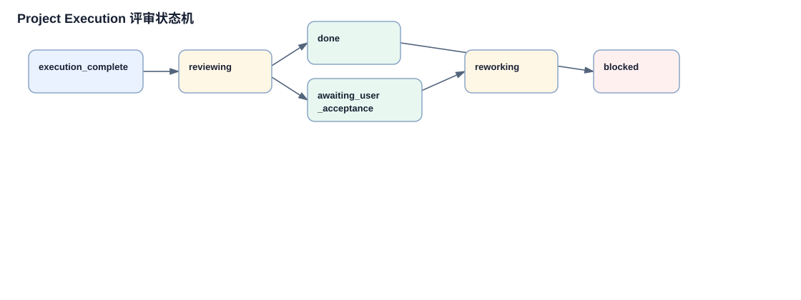

评审、返工、验收链路
执行成功不等于任务完成。这个项目把 executor 和 reviewer 分开，并把用户验收作为最终门禁。理解这条链路后，才能看懂为什么任务会在 execution_complete、reviewing、reworking、awaiting_user_acceptance、done、blocked 之间切换。
详细链路说明
前端渲染可用操作
`projects.js` 根据 task.executionState 显示 Start review、accept、rework、block 等按钮。输入是当前任务状态，输出是用户动作。
`api.projectExecutionReviewStart`
输入 taskId 和 attemptId，POST 到 `/project-execution/review/start`，把执行证据交给后端 review 入口。
`_handle_project_execution_review_start`
校验任务必须处于 execution_complete，attempt 必须有 evidence，并检查 reviewer 和 executor 独立性，输出 reviewId 和 activeAttemptId。
`_project_execution_run_review`
构造 review prompt，调用 reviewer provider，解析 JSON status，写入 reviewResult 和 reviewHistory。
review pass 分支
如果 requiresUserAcceptance 为 true，进入 awaiting_user_acceptance；否则 `_project_execution_mark_done` 并可能继续下一任务。
needs_more_work 分支
review feedback 触发 reworkCount 检查，未超过上限时创建 rework attempt 并重新进入 `_project_execution_run_attempt`。
用户验收动作
前端 accept 需要确认，reject_and_rework 或 mark_blocked 需要 feedback，然后 POST `/project-execution/accept`。
`_handle_project_execution_acceptance`
accept 标记 done；reject 创建返工 attempt；mark_blocked 写入 blocked。输出最终状态或下一轮执行。
状态机图

重点看两条返工入口：reviewer 返回 needs_more_work，以及用户拒绝验收。
关键代码摘录
review 状态机
if review["status"] == "pass":
...
elif review["status"] == "needs_more_work":
...
else:
...reviewer 输出被归一化为有限状态，随后决定等待验收、自动完成、返工或阻塞。
用户验收安全门
if action == "accept":
_project_execution_mark_done(...)
if action == "reject_and_rework":
...
if action == "mark_blocked":
...用户验收只允许在合适状态下推进，是 review pass/skipped 后的最终门禁。
分支、失败路径和数据变化
| 类型 | 说明 |
|---|---|
| 分支 | review pass、needs_more_work、blocked、requiresUserAcceptance、reject_and_rework、mark_blocked、reworkCount >= 3。 |
| 失败路径 | execution_complete 前启动 review 返回 409；attempt stale 返回 409；缺 evidence 返回 409；非 accept 操作缺 feedback 返回 400；checklist 未完成会阻止进入完成状态。 |
| 数据流 | evidence -> review prompt -> reviewer JSON -> reviewResult -> acceptance dialog -> acceptanceHistory -> done/rework/block。 |
关键概念补充
1. reviewResult
出现位置：`_project_execution_run_review`。它是 reviewer 对 evidence 的结构化判断，不是普通评论。
2. acceptanceHistory
出现位置：`_handle_project_execution_acceptance`。它记录用户最终接受、拒绝返工或标记阻塞的决策历史。